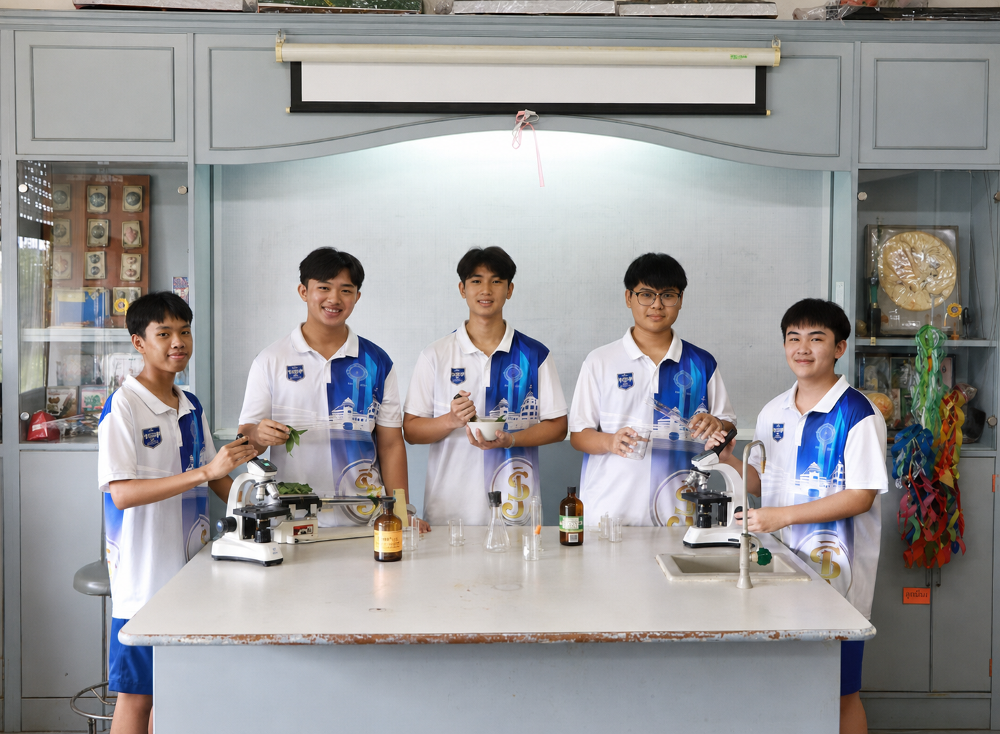
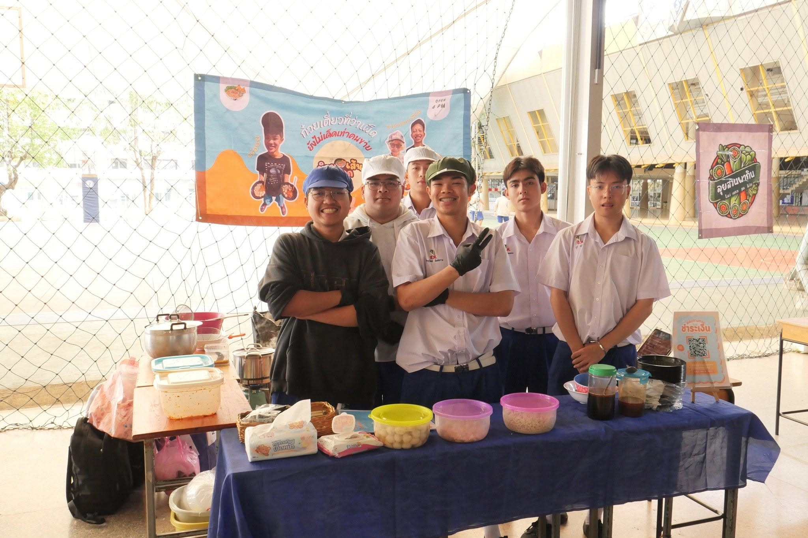

ฉันสำเร็จการศึกษาระดับมัธยมศึกษาตอนปลายจาก
หลักสูตร GEN Science (General Science)
แผนการเรียนวิทยาศาสตร์–คณิตศาสตร์
สำหรับนักเรียนระดับชั้นมัธยมศึกษาปีที่ 4–6
โดยหลักสูตร GEN Science ในระดับชั้นของฉันมีทั้งหมด
2 ห้องเรียน
หลักสูตรนี้มุ่งเน้นพัฒนาความสามารถทางวิชาการ
ในแผนการเรียนวิทยาศาสตร์–คณิตศาสตร์
เพื่อเตรียมความพร้อมสำหรับการศึกษาต่อในระดับมหาวิทยาลัย
รวมทั้งมีการเรียนเสริมและกิจกรรม Workshop ทางวิชาชีพ
นักเรียนจะได้เรียนรู้กิจกรรมจาก 4 กลุ่มสายวิชาชีพ ได้แก่
กลุ่มสายวิทย์–สุขภาพ กลุ่มสายวิทย์–วิศวกรรมศาสตร์
กลุ่มสายวิทย์–สถาปัตยกรรมและการออกแบบ
และกลุ่มสายวิทย์–เทคโนโลยี IoT
ทำให้ได้ค้นหาความสนใจและเตรียมตัวสำหรับการศึกษาต่อ

การเรียนภาคปฏิบัติในหลักสูตร GEN Science
หนึ่งในกิจกรรมที่ฉันรู้สึกภูมิใจและประทับใจมากที่สุด คือ
กิจกรรมพัฒนาผู้เรียน (ชุมนุม) อาชีพอิสระ
เพราะเป็นกิจกรรมที่ทำให้ได้เรียนรู้สิ่งต่างๆ
นอกเหนือจากบทเรียนในห้องเรียน
และได้ลองสัมผัสการทำงานจริงด้วยตัวเอง
ตั้งแต่การสำรวจตลาด การเลือกซื้อวัตถุดิบที่มีคุณภาพ
ในราคาที่เหมาะสม การคำนวณต้นทุน
และการตื่นตั้งแต่เช้ามืดเพื่อไปซื้อของ
ก่อนจะนำกลับมาเตรียมและจัดจำหน่าย
ทำให้ได้เรียนรู้ว่าการทำงานจริงต้องอาศัยทั้งการวางแผน
ความรับผิดชอบ และการแก้ไขปัญหาเฉพาะหน้า
นอกจากนี้ยังได้เรียนรู้การทำบัญชี การตั้งราคาสินค้า
การตลาด การแบ่งหน้าที่ และการทำงานร่วมกับผู้อื่น
กิจกรรมนี้จึงไม่ได้ให้เพียงประสบการณ์ด้านการค้าขาย
แต่ยังสอนทักษะการใช้ชีวิตหลายอย่าง
และเป็นหนึ่งในประสบการณ์จากโรงเรียน
ที่ฉันรู้สึกภูมิใจและจดจำมากที่สุด

กิจกรรมพัฒนาผู้เรียน (ชุมนุม) อาชีพอิสระ • ประสบการณ์นอกห้องเรียน
หลังจากเข้าศึกษาที่
มหาวิทยาลัยเทคโนโลยีราชมงคลพระนคร
ฉันตั้งใจที่จะพัฒนาตนเองทั้งด้านความรู้
ทักษะ และประสบการณ์
เพื่อเตรียมความพร้อมสำหรับการทำงานในอนาคต
-
ตั้งใจเรียนและพัฒนาความรู้
ในสาขาวิศวกรรมคอมพิวเตอร์ให้ดีที่สุด
-
พัฒนาทักษะด้านการเขียนโปรแกรม
และเรียนรู้เทคโนโลยีใหม่ๆ
ที่สามารถนำไปประยุกต์ใช้ได้จริง
-
ฝึกการคิดวิเคราะห์ การแก้ไขปัญหา
การสื่อสาร และการทำงานร่วมกับผู้อื่น
-
สร้างโครงงานและผลงาน
เพื่อเพิ่มประสบการณ์
และสามารถนำไปใช้เป็น Portfolio ในอนาคต
-
สำเร็จการศึกษาตามเป้าหมาย
และนำความรู้ไปประกอบอาชีพ
ในสายงานด้านคอมพิวเตอร์และเทคโนโลยีที่ตนเองสนใจ
{kind=link}
{kind=link}
{kind=link}